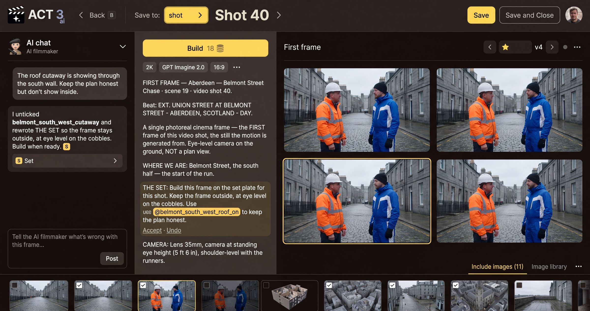
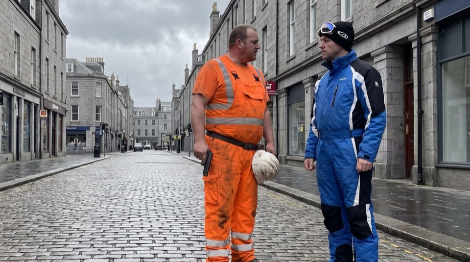
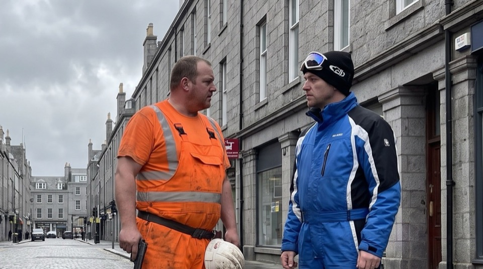

Step 5 of 7
Build and pick the best take
Press Build at the top of the prompt column; the price in credits is on the button. Four new takes appear on the right. Click the one that frames the shot best, and it gets the yellow selection.

Build
Build sends the prompt and every ticked reference image to the image model. The number on the button is what this build costs, in credits. The chips under it change that price and the look: the resolution (2K), the model (GPT Imagine 2.0) and the frame shape (16:9). A build needs a prompt; an empty prompt cannot be built.
A build usually returns four takes. They arrive on the right half as a new version (v4, then v5...). Use ‹ and › beside the version number to go back to an earlier version you liked. The star marks the version the shot's video will use.
Pick like a cinematographer


Compare the takes for what the video needs: the eyeline and headroom, a clean background, the costumes, and how the frame cuts with the shot before it. Pick the one the motion should start from, not just the prettiest still. Click it, and the yellow selection moves to it.
Your decision
One of the four is right: select it and continue. None is right: go back to the prompt and the references (step 4), change one thing, and build again. Every build costs credits, so change the cause, not just the luck.